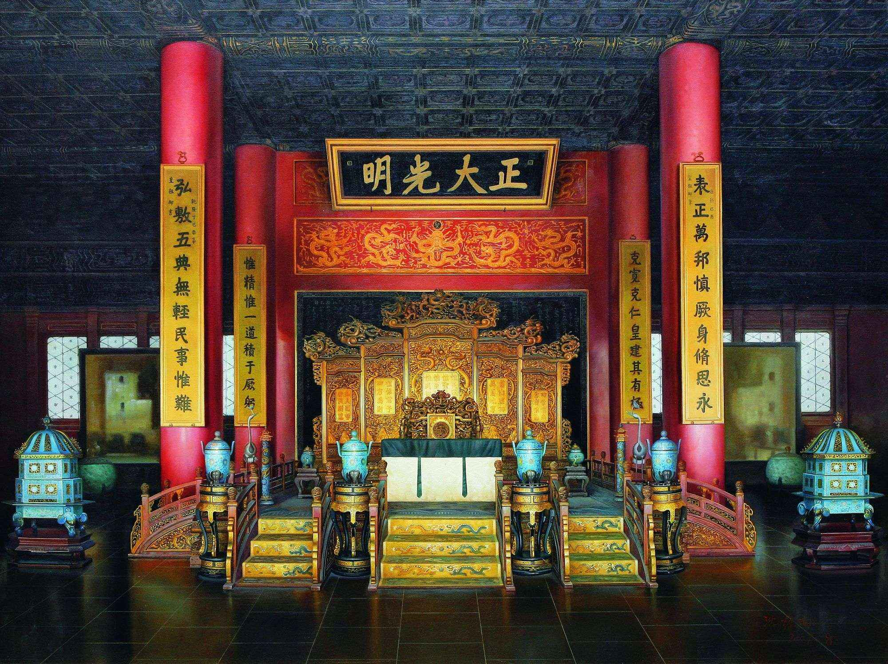
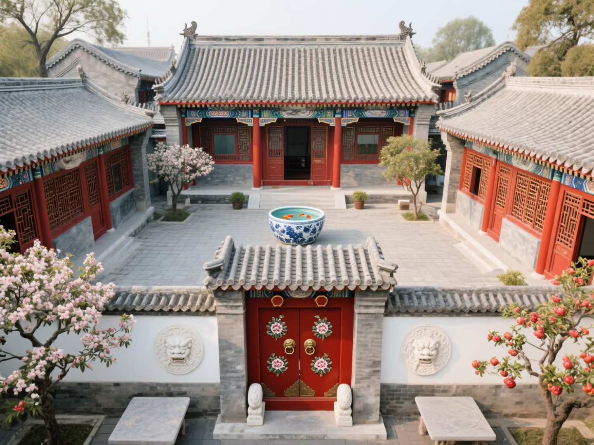
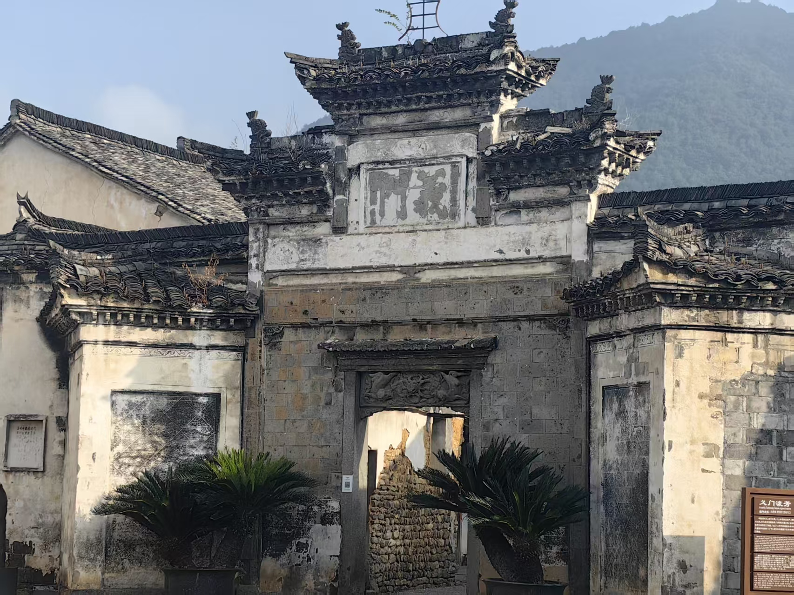
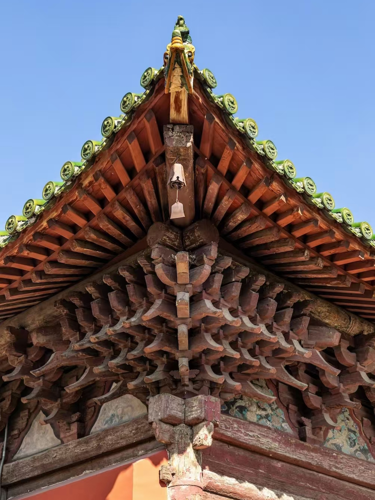

中国古代建筑成就 · 传统文化信息可视化交互设计
数字化复原｜多维度数据解析｜沉浸式文化科普｜交互式信息传播
明清最高等级重檐庑殿顶木构宫殿，皇权礼制顶峰之作

内廷核心帝王理政起居建筑，正大光明匾见证历史

北方合院礼制·防寒采光家族聚居建筑典范

南方天井建筑·防火防潮山水民居典范
世界现存最早敞肩圆弧石拱桥，隋代工程奇迹
北方十一孔联拱大型古石桥，501只石狮雕艺精绝
榫卯咬合结构 · 千年不散木构智慧（点击玩榫卯拼装游戏）

斗拱承重减震 · 古建筑抗震核心构造 （点击玩斗拱拆解游戏）